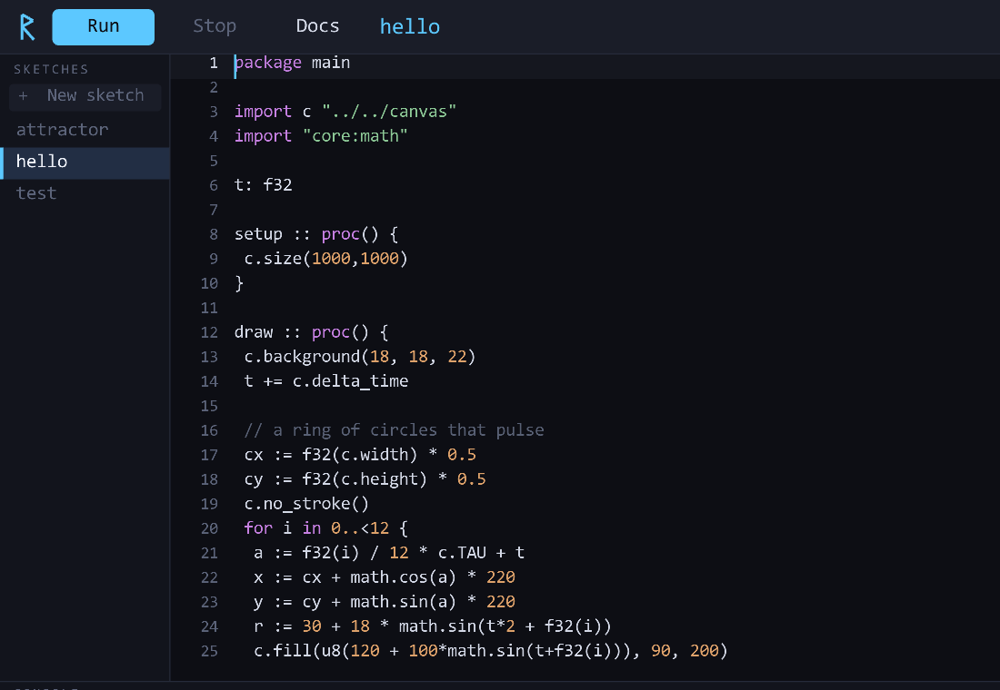
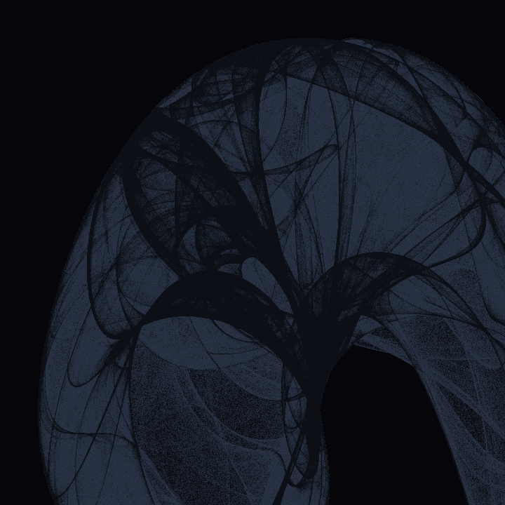

Creative coding in Odin — native speed, Processing-simple.
A self-contained studio for generative art: a built-in code editor, a Processing-style canvas library, and one-key compile-and-run. For the heavy stuff Processing and p5 can't keep up with.
Unsigned builds. Release notes · View source

Processing and p5.js are wonderful for starting, but Java and JavaScript hit a wall — millions of particles, strange attractors, real-time simulation. The native options solve performance but ask a lot: openFrameworks and Cinder drag in decades of C++; Nannou is fast but steep. Rune sits in between. Odin gives you C's directness with none of C++'s baggage or Rust's ceremony — and Rune wraps it in a studio so you don't assemble a toolchain.
| Processing / p5 | openFrameworks / Cinder | Nannou | Rune | |
|---|---|---|---|---|
| Native performance | — | ✓ | ✓ | ✓ |
| Simple language | ✓ | C++ | ~ | Odin |
| Built-in editor + run | ✓ | — | — | ✓ |
| Batteries included | ✓ | ~ | ~ | ✓ |
Syntax highlighting, c. autocomplete for the whole API, selection, copy/paste, undo/redo, adjustable font.
Ctrl+R compiles your sketch and launches it in its own window. Compile errors show inline.
Shapes, HSL/HSV color, seedable random, Perlin noise, Vec2 helpers, easing, and a persistent accumulation buffer.
Press F1 for searchable API docs with examples, an Odin cheatsheet, and a shortcuts list — jump to any symbol.
Paper-size presets (size_paper(.A4, 300)) and full-resolution PNG export with Ctrl+S.
Compiled Odin + raylib. Push millions of points where JS/Java fall over — the whole point.
setup and draw. Hit Run.package main import c "../../canvas" import "core:math" t: f32 setup :: proc() { c.size(900, 900) c.background(6, 6, 10) } // a de Jong strange attractor x, y: f32 = 0.1, 0.1 draw :: proc() { c.stroke(150, 190, 255, 8) for i in 0..<120_000 { nx := math.sin(1.4*y) - math.cos(-2.3*x) ny := math.sin(2.4*x) - math.cos(-2.1*y) x, y = nx, ny c.point(450+x*200, 450+y*200) } }

Rune compiles your sketches with the Odin compiler (which bundles raylib), so you'll need Odin on your PATH.
Grab your platform, unpack it, and run the rune binary — keep it next to the bundled canvas/ and sketches/. On macOS, clear the quarantine flag once: xattr -dr com.apple.quarantine rune.
# Windows build.bat # Linux / macOS ./build.sh
Then click a sketch, edit it, and press Ctrl+R.